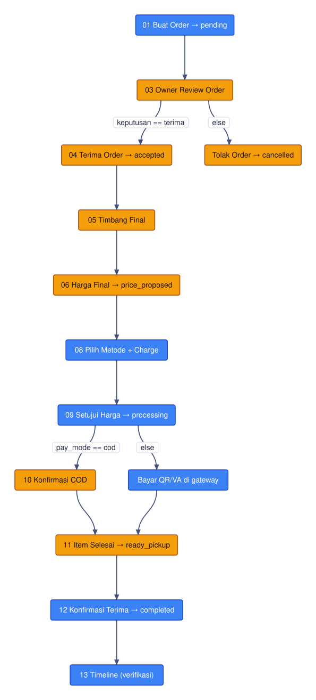

Draw your API flow as a mermaid diagram. Run it — step-by-step or as a CI test.
GitHub go-routine ecosystem powered by flowmaid--auto for CIYou draw a normal mermaid flowchart. flowrun walks it — hitting a real endpoint at each node, capturing values, asserting responses — and recolours the graph live (🟡 running · 🟢 ok · 🔴 fail). The diagram below is flowrun's actual output, rendered by flowmaid straight from the CLI.
A real end-to-end order flow (customer ↔ owner, 16 steps) — the same graph you author, executed against a live backend.
Visual and execution stay separated on purpose: the .mmd is pure mermaid (renders anywhere), the sidecar says what each node does, and an env file — never committed — holds the host & tokens.
flow.mmd — the graph
flowchart TD n01[Create order] --> n03[Review] n03 -->|keputusan == terima| n04[Accept] n03 -->|else| nR[Reject] n04 --> n06[Set price]
flow.yaml — per-node behaviour
n01: auth: customer request: POST /api/v1/orders body: { outlet_id: "{{outlet_id}}" } capture: { order_id: data.id } assert: { status: 2xx }
run it
# step-by-step + live SVG flowrun run -f flow.mmd \ -c flow.yaml -e dev.yaml \ --svg status.svg --serve :8787 # CI: exit ≠ 0 on failure flowrun run … --auto
Edge labels are conditions, evaluated over captured variables. Exactly one true edge is taken; ambiguity pauses in the GUI and fails deterministically in --auto. Change the path without touching the graph: --var pay_mode=digital.

Owner accept/reject and COD/digital forks — the runner picks the live branch and dims the road not taken.
Interactive next-next (Enter/skip/retry/quit) or --auto for pipelines. Every step logs the request line, payload, response, and a ready-to-paste curl.
A native egui canvas: Figma-style pinch-zoom & pan, a premium dot-grid, per-node inspector with method badges, and re-run-one-node.
--serve spins a tiny auto-refreshing page — watch the SVG recolour in any browser while the flow runs.
Tokens are masked ${TOKEN_*} in logs and curl; opt into real values with --reveal-tokens. Env files stay gitignored.